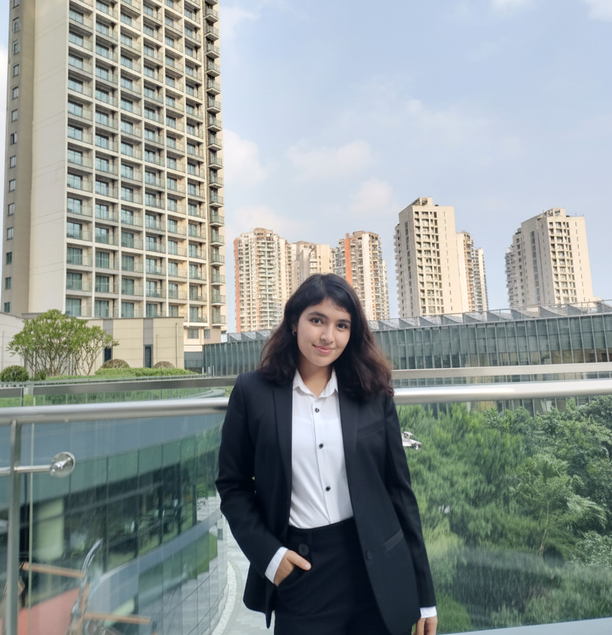
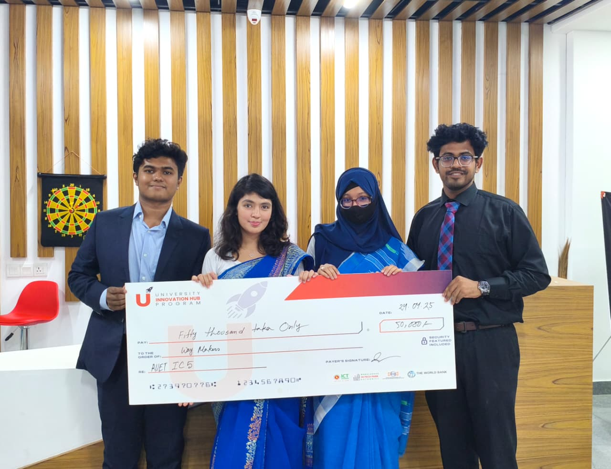
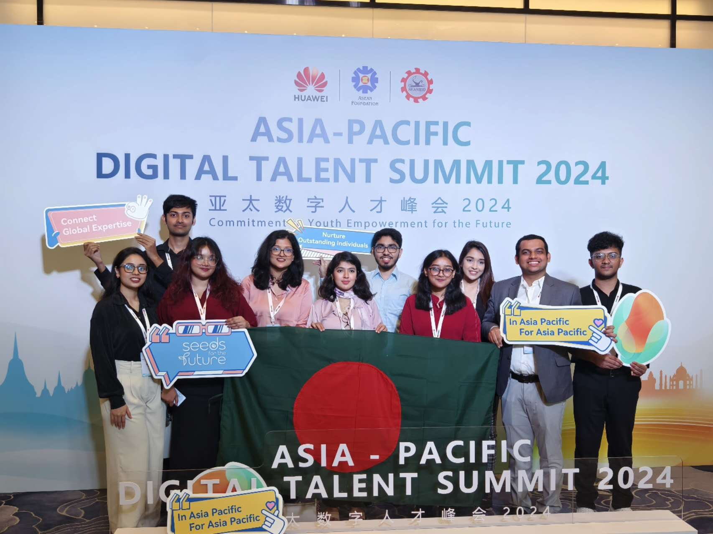
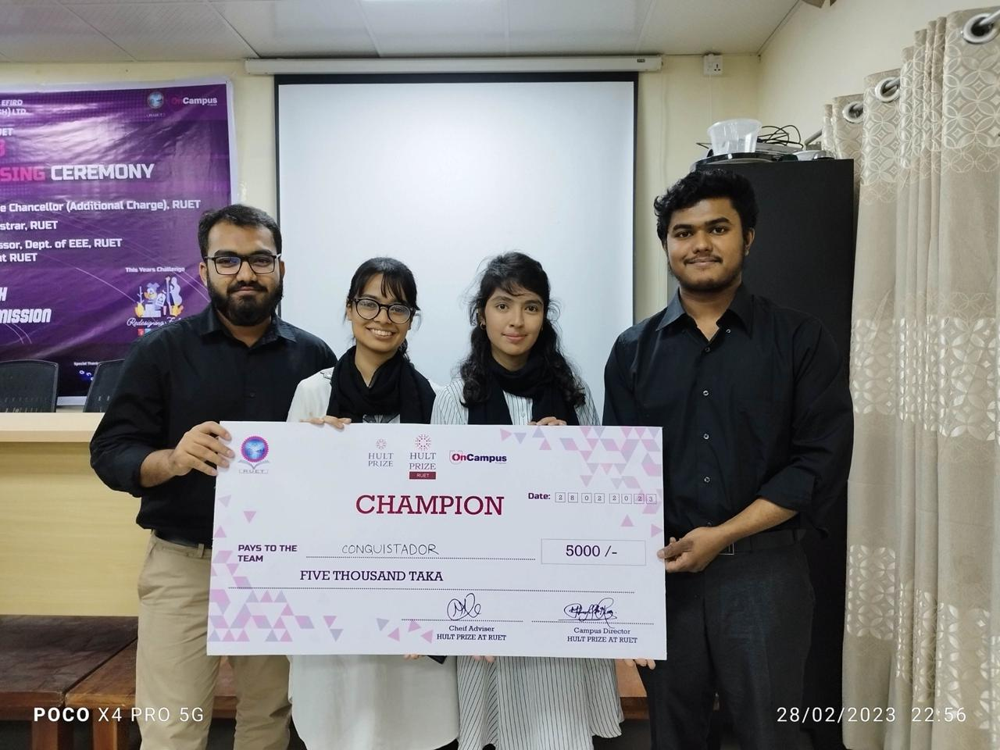

B.Sc. in Computer Science and Engineering
Rajshahi University of Engineering & Technology (RUET) · Rajshahi, Bangladesh
BAETE-ACCREDITED CSE PROGRAM
Research portfolio · Dhaka, Bangladesh
Language Models · Multimodal AI · Trustworthy Evaluation
Computer Science and Engineering graduate investigating how language models and multimodal AI systems reason with evidence, communicate uncertainty, and support reliable decisions.

NLP · LLMS · MULTIMODAL AI01 · Research profile
I study how language models reason, fail, and can be evaluated in real information settings. My work spans multilingual LLM evaluation, multimodal provenance analysis, and an NLP-backed system that communicates calibrated uncertainty for AI-assisted medical misinformation detection.
I enjoy building end-to-end research prototypes that connect model behavior, evidence, and user-facing interaction. I am especially interested in LLM reasoning and evaluation, knowledge-grounded language technologies, multimodal learning, and reliable human–AI collaboration.
02 · Education
Rajshahi University of Engineering & Technology (RUET) · Rajshahi, Bangladesh
BAETE-ACCREDITED CSE PROGRAM
03 · Research experience
Undergraduate thesis
Developed and evaluated an end-to-end research system with a RoBERTa-based NLP backend and four web explanation interfaces. It connects model predictions, linguistic cues, calibrated probabilities, uncertainty, evidence, and sources, then evaluates both model behavior and human interpretation through a controlled study.
04 · Publications
2025 28th International Conference on Computer and Information Technology (ICCIT), 2025.
Developed a multimodal LLM-based approach to semantic deepfake analysis and web-supported provenance tracing, focusing on verification beyond visual artifact detection.
DOI: 10.1109/ICCIT68739.2025.11490141 ↗2026 IEEE 2nd International Conference on Quantum Photonics, Artificial Intelligence & Networking (QPAIN), 2026.
Developed a parallel Bangla–English reasoning benchmark for instruction-tuned LLMs and examined failures involving mistranslation, cultural mismatch, and logical inconsistency.
DOI: 10.1109/QPAIN69676.2026.11546604 ↗05 · Selected projects
Built an interactive AI-assisted assessment interface with adaptive dashboards and progress feedback, emphasizing clear communication of system feedback during human decision-making.
View on GitHub ↗Developed an LLM-powered conversational search application with context-aware query handling and dialogue memory for coherent multi-turn responses and interactive information access.
View on GitHub ↗06 · Achievements

Startup innovation, market validation, and MVP development. · 2025

2024

Startup Innovation, 2023
Awarded for all four years of undergraduate study.
Top 20% globally, 2024
2024
Awarded for academic excellence in high school.
07 · Professional & leadership experience
Co-founded a community-oriented delivery platform centered on trust, reciprocity, safety, and human connection; contributed to interface design, prototyping, product development, and user-oriented validation. Supported through the World Bank-supported University Innovation Hub.
Worked on front-end interface design and web-development workflows.
Developed and deployed PHP-based applications involving interface design, backend integration, and deployment.
08 · Research & technical skills
09 · Contact
I welcome research collaborations, academic networking, and opportunities in NLP, LLM evaluation, multimodal AI, and trustworthy human–AI systems.
Email me ↗